全内网物理隔离中继
全线接入深港、沪日、京德高等级 IEPL 以太网专线与 CN2 GIA 精品回程。数据流直接穿过海底光缆专享波分通道，彻底规避公网国际出口拥塞与策略性丢包。
JITTER: < 1.2ms
ROUTE: DIRECT-L2
山水云以高山大地测绘与极地科考通信标准打造新一代跨洲网络加速体系。依托多路物理隔离 IEPL 内网专线与 Anycast 智能等高线路由算法，无论身处复杂企业内网还是移动基站环境，皆能实现 4K/8K 视讯极速秒开与全球研发算力毫秒级直连。

摒弃传统公网拥堵路由，山水云采用三层全冗余跨洲传输架构，将每次数据包转发视作精密测绘坐标投射，确保晚高峰依旧稳如磐石。
全线接入深港、沪日、京德高等级 IEPL 以太网专线与 CN2 GIA 精品回程。数据流直接穿过海底光缆专享波分通道，彻底规避公网国际出口拥塞与策略性丢包。
自研 TopoRoute 实时遥测引擎，每 500 毫秒对全球 42 座高规格骨干机房进行微秒级时延探针采样。一旦主干光缆出现波动，15 毫秒内无感热切换至最优备用山脊链路。
搭载新一代 AEAD 混沌流加密协议与动态端口跳跃机制，所有节点均采用无盘 RAM-Only 内存态运行模式。系统物理层面杜绝任何访问日志留存，全面守护科研与商业隐私。
每一座山水云节点均配备高纯净度原生住宅与ISP双属性IP池，全面通过流媒体区域版权校验与主流生成式 AI 平台风控测试。
原生支持 Netflix、Disney+、Max、Hulu、BBC iPlayer 及动画疯等全区非自制剧解锁。独享大带宽缓冲通道，拖动进度条实现真正极速秒开。
针对 ChatGPT Plus、Claude 3.7、Gemini Advanced、Cursor 及 GitHub Copilot 专项优化 WebSocket 长连接，彻底告别频繁断连与区域封锁报错。
全节点开启 Full-Cone NAT 全锥形 UDP 转发，畅联 Steam、PlayStation Network、GeForce NOW 与日韩台服大作，大幅压降帧率抖动与竞技延迟。
高速直通 IEEE Xplore、Google Scholar、Hugging Face 模型仓库、Docker Hub 与 GitHub Release，让数 GB 权重文件与源码包满速下载。
透明清晰的阶梯配额方案，全系标配 IEPL 专线节点与流媒体/AI 全解锁特权，支持按月灵活订阅或年度科考远征特惠。
针对初次部署山水云网络加速服务的探路者，我们整理了客户端兼容、专线原理与晚高峰稳定性的核心技术解答。
山水云提供标准化的多协议云端订阅接口，一键兼容 Windows、macOS、iOS、Android、Linux 以及 OpenWrt 软路由系统。您可以直接在 Clash Verge Rev、Mihomo Party、Shadowrocket、Quantumult X、Stash、Sing-box 或 Surge 中导入专属加密订阅链接，系统将自动同步分流规则与最优节点组。
普通服务商通常依赖公网直连或低规格中转，在晚间 20:00 至 23:00 国际出口拥堵时极易出现断流。山水云全线采用运营商级 IEPL 内网专线过境，数据包不经过公网国际关口，并维持低于 45% 的冗余带宽负载水位，从物理层保障晚高峰零丢包与超低抖动。
非常稳妥。山水云针对 AI 算力平台与海外社媒部署了专门的高信誉度原生 ISP 落地 IP 池，并在云端订阅规则中内置了精准域名分流策略，确保所有涉及风控校验的请求均由固定纯净原生节点承载，有效避免因 IP 频繁跳变或机房黑名单导致的账号受限。
来自全栈工程师、海外流媒体发烧友与跨国科研团队的真实长测反馈，印证山水云在复杂网络环境下的可靠表现。
“团队每天需要高频调用 Claude API 并在 Cursor 中进行跨仓库代码重构，之前换过三家服务经常遇到连接重置。切到山水云雪线巡航版半年多，SSH 会话从没掉过线，Docker 镜像拉取直接跑满千兆宽带。”
“我们课题组经常要从欧洲空间局与北美公开数据中心同步几十 GB 的合成孔径雷达遥感影像。山水云的欧洲专线稳定性令人印象深刻，长距离 TCP 吞吐率极为平滑，大幅缩短了数据预处理周期。”
“家里通过 Apple TV 4K 配合软路由挂载山水云，全家人看 Netflix 杜比视界和 YouTube 8K 演示片基本点开即播，缓冲条直接拉出好几分钟，台湾巴哈姆特动画疯和 Disney+ 区域字幕也全部正常。”
“做海外品牌独立站和 TikTok 矩阵最怕 IP 关联和污染。山水云极峰科研版提供的原生 ISP 节点纯净度非常高，配合指纹浏览器使用大半年，店铺风控评分一直保持绿色满分，是真正的生产力工具。”